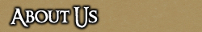

<TABLE BORDER CELLPADDING="0" background="bocimages/scrollbgdark.gif" width="100%">
	<TR>
	<!-- Header or whatever -->
	<BR>
		<TD valign="top" class="notes">
			<p><i>Let the adventure begin...</i></p>

			<p>
				The Baronship of Cove is a low fantasy roleplaying guild on the Europa server of the MMORPG <a href="https://uo.com">Ultima Online</a>.
			</p>

			<p>
				It was founded in the Autumn of 2004 by Baron Octiovus and a few brave men who you can read about in the <a href="index.php?page=legends">Legends and Tales section</a>.
			</p>

			<h3>The Baronship</h3>

			<p>The Baronship itself is a small coastal town. Insular and naturally distrustful of outsiders, Covians eke out a harsh living in an increasongly dangerous world. Cove has a rich tapestry of activity, from pitched battles to bustling markets, from daring expeditions to the darkest dungeons to rowdy tavern nights. Covians have seen it all, and come out on the other side more or less in one piece.</p>

			<h3>Charter</h3>

			<p>The Baronship of Cove is a group of friends working as a team to tell stories.</p>

			<p>Regardless of any In Character events, we are all friends outside of the story. This applies both to The Baronship of Cove and the other guilds in the community.</p>

			<p>Regardless of In Character rank, all are equal outside of the story.</p>

			<p>We do not place a lot of value on being a great PvPer, having the best skills, having the best armour, or killing the most enemies. We do not place a lot of value on gold or houses. We value one thing above all others: the ability to roleplay, tell stories, and create a living character that adds to the guild and the game.</p>
		  
			<h3>Challenge</h3>

	      The Baronship is a challenge for all players, new and old, but we work to
	      help players develop and become better at their roleplaying. If this prospect
	      appeals to you, then stick around and look at what we have to offer. We're
	      not simply a one concept guild. We're not just a Militia, or a bunch of peasants.
	      We have many interwoven concepts, which means there is always something for
	      every style of player.
		 
		  <p>Whether you are a simple peasant, a corrupt merchant, or battle hardened soldier, all are welcome to join the fun!</p>

		  <p><a href="index.php?page=apply">Enlist now!</a></p>
		</TD>
	</TR>
</TABLE>
